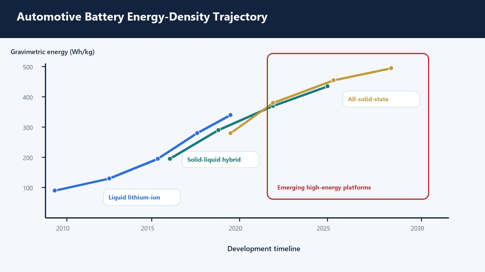
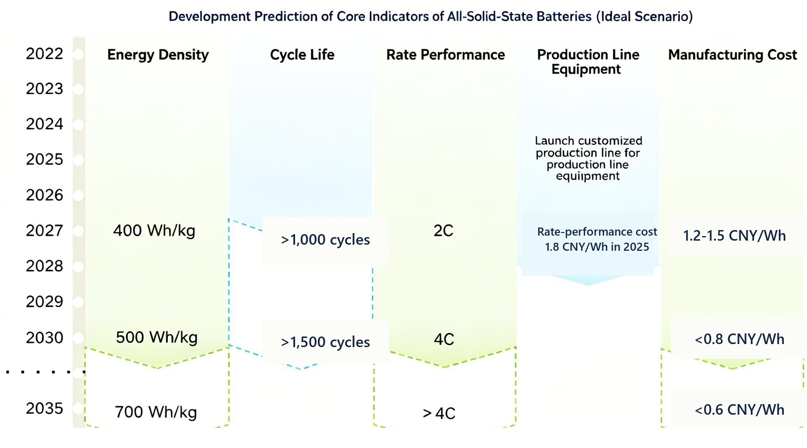
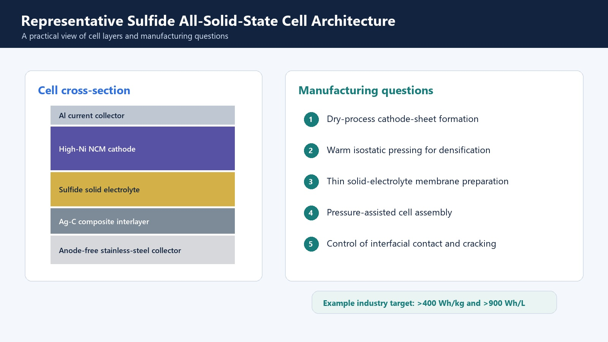

Automotive batteries are not moving toward one universal chemistry. Liquid LFP and nickel-rich lithium-ion cells continue to improve, solid-liquid hybrid batteries provide an intermediate architecture, and all-solid-state programs target lithium metal and high-energy electrodes. Commercial progress depends on coordinated advances in materials, interfaces, mechanics, manufacturing yield, cost, and realistic cell validation.
Near-Term: Better Liquid Lithium-Ion Cells
LFP remains important where cost, cycle life, and thermal stability dominate. Nickel-rich NMC and NCA target higher energy density. Improvements continue through particle engineering, coatings, silicon-carbon anodes, electrolyte additives, formation control, and cell-to-pack integration.
Liquid-electrolyte systems benefit from the deepest manufacturing base. Their evolution is therefore likely to continue even as hybrid and solid-state systems enter specialized markets.

Transition Stage: Hybrid Architectures
Hybrid cells can introduce solid electrolyte layers, ceramic-rich separators, gels, or composite electrolytes while retaining liquid for wetting and transport. This route can provide a lower-disruption path for new materials and lithium-metal protection concepts.
The key uncertainties are long-term phase compatibility, interface impedance, gas generation, liquid redistribution, and whether the added solid components deliver enough value to justify manufacturing complexity.
Longer-Term: All-Solid-State Batteries
All-solid-state designs target high-energy cathodes and lithium-metal or high-silicon anodes. Their commercialization depends on thin electrolyte membranes, stable interfaces, high-loading composite electrodes, pressure management, cycle life, and cost.
Sulfide, oxide, and halide routes will not converge on one process. Each requires different moisture controls, densification methods, interlayers, and cathode strategies.

New Chemistry Platforms
Sodium-ion addresses resource and cost priorities. Lithium-sulfur offers high theoretical specific energy but needs practical sulfur loading and lithium-metal control. Lithium-air remains a longer-horizon system with major challenges in oxygen management, parasitic chemistry, and round-trip efficiency.
These chemistries will be selected by application. Passenger EVs, commercial vehicles, aviation, robotics, marine systems, and stationary storage impose different requirements on energy, power, lifetime, safety, temperature, and price.
What the Roadmap Means for Materials
| Platform | Materials emphasis |
|---|---|
| Liquid LFP/NMC | Battery-grade salts, low-moisture solvents, SEI/CEI additives, graphite/silicon, active-material coatings |
| Solid-liquid hybrid | Compatible liquid formulation, ceramic/polymer phases, interface additives, coated separators |
| All-solid-state | Sulfide/oxide/halide electrolytes, lithium metal, composite cathodes, interlayers, pressure-compatible structures |
| Sodium-ion | Sodium salts, hard carbon, sodium cathodes, low-cost solvents and additives |
| Lithium-sulfur | Sulfur composites, lithium metal, solid or specialty electrolytes, protective interphases |
A Portfolio Approach
A useful materials supplier must connect product specifications with the target cell. Purity, water content, particle size, conductivity, morphology, and packaging are meaningful only when linked to electrode chemistry, process route, and validation stage.
Winigen's portfolio spans electrolyte salts, solvents, additives, solid-state electrolytes, cathode and anode active materials, lithium metal foil, and custom electrolyte formulations. That breadth supports comparative screening rather than forcing every development program into one chemistry.
Materials-Level Requirements
Useful solid electrolytes require high ionic conductivity, low electronic conductivity, appropriate electrochemical stability, low moisture sensitivity, and a processable particle-size distribution. Cathode composites require continuous ionic and electronic networks without excessive inactive material.
The most conductive material is not necessarily the best manufacturing choice. Softer sulfides can densify under pressure but require stringent moisture handling. Oxides are often more chemically robust but can require high-temperature densification or interface treatments. Halides can be attractive on the cathode side but still require moisture and reduction-stability control.
Interfaces and Mechanics
Every all-solid-state cell contains multiple interfaces: active material/electrolyte, electrolyte/electrolyte, current collector/composite, and often coating or interlayer boundaries. Reaction products, space-charge effects, roughness, voids, and loss of physical contact all contribute to impedance.
Volume change during cycling creates stress. When the stack cannot accommodate it, particles separate, cracks propagate, and current becomes concentrated. Lithium-metal interfaces add stripping-induced void formation and plating-induced pressure to the problem.
Manufacturing and Scale-Up
Commercial cells need thin, defect-controlled electrolyte membranes and thick, high-loading composite electrodes. Powder mixing, dry processing, slurry chemistry, calendaring, lamination, warm or cold pressing, cutting, stacking, and sealing must preserve phase purity and interface quality.
Sulfide processing may reuse portions of lithium-ion equipment, but dry-room specifications, solvent compatibility, gas handling, and pressure-assisted assembly can differ substantially. Oxide routes may add ceramic processing, sintering, or coating steps. Manufacturing yield is therefore as important as a record laboratory result.
What Pilot-Line Validation Should Measure
| Stage | Critical measurements |
|---|---|
| Powder qualification | XRD, D10/D50/D90, moisture, impurities, ionic and electronic conductivity |
| Pellet or membrane | Thickness, relative density, defects, pressure history, conductivity distribution |
| Composite electrode | Areal loading, percolation, coating uniformity, chemical compatibility, impedance |
| Interface cell | Critical current density, stripping/plating, pressure response, post-mortem morphology |
| Prototype pouch | Energy density, retention, swelling, pressure uniformity, safety, manufacturing repeatability |


References
- Schmuch et al., Performance and cost of materials for lithium-based rechargeable automotive batteries, Nature Energy 3, 267-278 (2018).
- Duffner et al., Post-lithium-ion battery cell production and its compatibility with lithium-ion cell production infrastructure, Nature Energy 6, 123-134 (2021).
- Janek and Zeier, A solid future for battery development, Nature Energy 1, 16141 (2016).
- Vaalma et al., A cost and resource analysis of sodium-ion batteries, Nature Reviews Materials 3, 18013 (2018).
- Manthiram et al., Rechargeable Lithium-Sulfur Batteries, Chemical Reviews 114, 11751-11787 (2014).
- Lee et al., High-energy long-cycling all-solid-state lithium metal batteries enabled by silver-carbon composite anodes, Nature Energy 5, 299-308 (2020).
- Randau et al., Benchmarking the performance of all-solid-state lithium batteries, Nature Energy 5, 259-270 (2020).
- Banerjee et al., Interfaces and Interphases in All-Solid-State Batteries with Inorganic Solid Electrolytes, Chemical Reviews 120, 6878-6933 (2020).
- Kalnaus et al., Solid-state batteries: The critical role of mechanics, Science 381, eabg5998 (2023).
Discuss Your Material Screening Program
Winigen Materials supplies battery-grade salts, solvents, additives, active materials, solid-state electrolytes, lithium metal foil, and formulation support from laboratory screening through pilot-scale validation.
Contact Winigen Materials